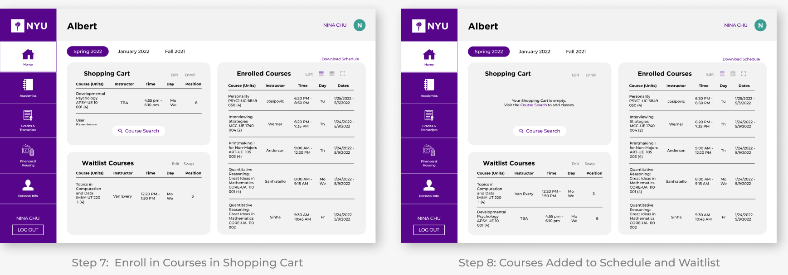
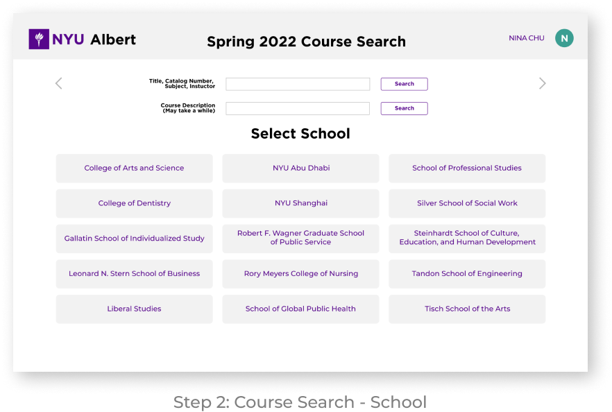

Role:
UX/UI Designer
Strategies:
User research, UX/UI Design, Prototyping
Tools Used:
Figma
Timeline:
Nov 2021 - 4 Weeks
Overview
In light of class enrollment season for spring classes, I noticed various user experience issues with NYU Albert. NYU Albert is the website students use to enroll for classes, check official grades, view degree progress, and see their school schedule. It even got to the point where I would overhear students complaining about the usability of the website. I decided to do a design sprint as a personal project to envision a more user friendly version of NYU Albert.
Problem Statement
Students at NYU are having difficulties searching for classes, viewing degree progress, and scheduling their classes efficiently. How can we make NYU Albert easier to read and more efficient?
Research
Survey Results
There were 27 responses to the survey from students of various majors and years.
- The average answer was 4.6 when rating NYU Albert overall on a scale of 1-10.
- The average answer was 4.4 when rating the efficiency of NYU Albert on a scale of 1-10.
- The average answer was 5.3 when rating how difficult it is to find classes on a scale of 1-10.
- The average answer was 5 when rating how difficult it is to read their schedule on a scale of 1-10.
*All answers were rounded up*

What are the current issues?
Students were also asked what specific issues they had when using NYU Albert. The problems that had numerous complaints were:
- There are no back buttons. It takes you back to the beginning everytime you choose a class or want to go back, you have to start your search all over again.
- Screen is a small pop-up window that you can’t enlarge.
- You cannot see current classes and schedules to see if additional classes fit. You have to go back and forth if you forget or you have to write it down manually to see on the side.
- School schedule is very zoomed in and doesn’t zoom out, can’t see weekly schedule without scrolling.
- There is a lot of jumbled information on the degree progress page.
- A lot of scrolling to get to major’s classes from main course search page if your school starts with a later letter in the alphabet.
Analyze
User Personas
Solutions
- Add back buttons.
- Full size interface, less clutter so it is easier to read, less scrolling, more organized information.
- When selecting a class, display how that class lines up with the user’s current schedule and selected classes.
- Offer a full size, downloadable readable schedule.
- Disclose what requirements each class fulfils.
- Have users select school, then major, so the screen is less cluttered and the user does not have to scroll through every major from every school to find their major.
User Flow
After analyzing the issues and solutions, I created a user flow chart of how users would navigate NYU Albert to accomplish their various goals.
Design
Design Guideline
I followed the NYU Design Guideline.
Before: Current NYU Albert UI/UX
This is a screen recording of the current NYU Albert and how the user selects courses.
After: Final Prototype
This is a screen recording of the prototype I designed on Figma that walks you through the process of searching through and adding courses.
Final Designs



Conclusion
Overall, this project has been a great experience. I thoroughly enjoyed tackling the usability issues and finding solutions for each problem. Feel free to give any feedback you have! Constant iteration is key.
Other Projects: